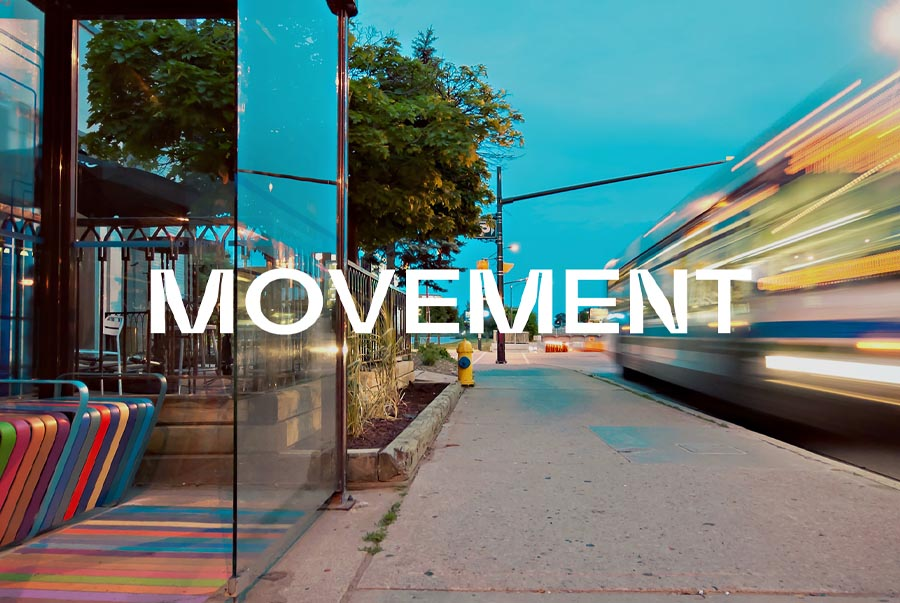
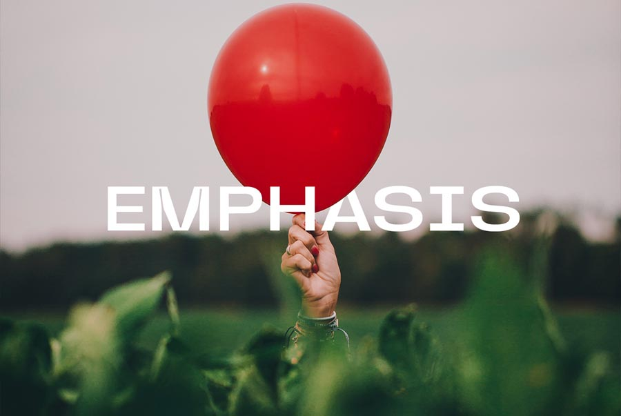
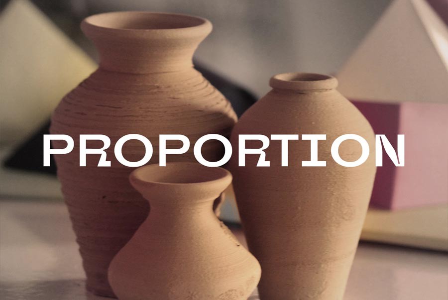

Graphic Design Principles တွေကို Design စတင်လေ့လာမယ့်သူတွေအတွက် အထောက်အကူဖြစ်စေဖို့ ရည်ရွယ်ပြီး အတိုချုပ်လေးတင်ပေးလိုက်ပါတယ်။"
Movement တွေအသုံးများတဲ့နေရာတွေက အခုsocial media design မှာဆိုရင် Wi-Fi service နဲ့ပတ်သက်တဲ့နေရာတွေ၊ ကားနဲ့ပတ်သက်တဲ့ဒီဇိုင်းတွေမှာတွေ့ရတယ်။ ပြီးရင် street photography မှာလဲတွေ့ရတယ်။ အသုံးပြုတဲ့နေရာတွေကတော့ သူ့နေရာနဲ့သူရှိပါတယ်။ ဒါကတော့မြင်သာအောင်ပြောပြတာပါ။
ဒီဇိုင်းမှာ movement ကိုအသုံးပြုတာက ရိုးရိုး static design တွေထက်ပိုပြီး ကိုယ့်ရဲ့ viewer တွေကိုစိတ်ပို၀င်စားစေတယ်။
ဥပမာ 5G network ကိုဖုန်းအမျိုးစားတစ်ခုမှာအသုံးပြုလို့ရပြီဆိုပါစို့။ ဒီ ဒီဇိုင်းကိုလုပ်တဲ့အခါ ကျွန်တော်တို့ အငြိမ်လုပ်မလား? movement တွေနဲ့လန်ပြန်နေအောင်လုပ်မလား? သေချာတယ် movement တွေနဲ့လုပ်မှာ။ ဒါမှ ကြည့်တဲ့သူကချက်ချင်း အော် 5G ဆိုတာဒီလိုမြန်ပါလား။ 5G နဲ့ဆိုရင်ငါတို့ video တွေဒေါင်းလုပ် လုပ်ရင် တစ်စက္ကန့်လောက်ပဲကြာမှာပဲ။ viewer တွေကိုဒီလိုမြင်နိုင်ဖို့အတွက် movement ကပဲကူညီပေးသွားတာပါ။ ဒါကြောင့်များများအသုံးချကြည့်ပါ။
Balance ကို တစ်နည်းအားဖြင့် weight လို့သတ်မှတ်နိုင်တယ်။ ချိန်ခွင်လိုသဘောထားပြီးစဥ်းစားမယ်ဆိုရင် ပိုသဘောပေါက်လွယ်လိမ့်မယ်။ တစ်ဖက်ကနည်းနေရင် တစ်ခြားတစ်ဘက်ကို အလေးစီးသွားမယ်။ ဒီလိုမျိုးမဖြစ်အောင်ဒီဇိုင်းလုပ်တဲ့အခါ ကိုယ်သုံးထားတဲ့ elements တွေရဲ့ Balance ဟာညီနေဖို့လိုတယ်။
ဥပမာ လှေစီးပြီးတစ်ဖက်ကမ်းကိုကူးဖို့ လူခြောက်ယောက်စောင့်နေကြတယ်ဆိုပါစို့။ ⛵ လှေလှော်တဲ့သူနဲ့ဆိုတော့ ၇ယောက်ပေါ့။ ဒီ ၇ယောက်လုံးဟာ ညာဘက်အခြမ်းမှာပဲထိုင်မယ်ဆိုရင် ဒီလှေကနစ်ဖို့ပဲရှိတော့တယ်။ဘယ်လိုမှ Balance မျှမှာမဟုတ်ဘူး။ ဒီလိုမဖြစ်အောင် Balance ကိုအသုံးပြုပြီးကျွန်တော်တို့တွေ တစ်ဖက်ကိုသုံးယောက်စီခွဲထိုင်ပြီး လှေလှော်တဲ့သူကို အလယ်ရဲ့နောက်ဆုံးကိုပို့လိုက်မယ်ဆိုင်ဒီပြဿနာဖြေရှင်းပြီးဖြစ်သွားမယ်။ လိုရာခရီးလဲရောက်သွားမယ်။ Balance ကိုဘယ်လိုသုံးရမလဲမေ့နေရင် လှေစီးတဲ့အကြောင်းသတိရပါ။ 😂

Emphasis ဆိုတာတူညီတဲ့ circles, shapes, colors, weight တွေကိုကွဲထွက်အောင်လုပ်ပေးတဲ့သဘော။ အဓိကကတော့ Focal point ကိုရှာတဲ့သဘော။ ***(Contrast လဲ Focal Point ကိုရှာတဲ့သဘောပါပဲ၊ ⭐တူတယ်လို့တော့မမှတ်ထားနဲ့နော်။ ဆက်နွယ်မှုရှိတယ်လို့သာမှတ်ထားပါ။)
ဥပမာ ကိုယ့်ကောင်မလေးကို မွေးနေ့မှာ ပန်းစဥ်းနဲ့ ပူပေါင်းလေးတစ်လုံး လက်ဆောင်ပေးချင်တယ်ဆိုပါစို့။ ပူပေါင်းဆိုင်ကိုသွားမယ်။ ဆိုင်ထဲမှာရှိတဲ့ပူပေါင်းတွေကလဲ အရောင်တွေသိပ်မစုံတော့ဘူး။ အမဲရောင်တွေချည်းပဲဗျာ။ ဒီထဲမှာမှ ရှားရှားပါးပါး အနီရောင်ပူပေါင်းလေးတစ်လုံးကိုတွေ့လိုက်တယ်ဆိုရင် ဘယ်လိုနေမလဲ? ၀ယ်မှာလား? ၀ယ်မှာပေါ့ဗျာ။ တူညီတဲ့အရောင်တွေထဲကမှ Emphasis ဖြစ်တဲ့ပူပေါင်းလေး ဆိုပြီးတော့တောင် ၀ယ်ဦးမှာ။
တူညီတဲ့အရာတွေထဲမှာမှ တစ်ခုတည်းကွဲထွက်နေတဲ့အရာတွေကို Emphasis လို့ခေါ်ပါတယ်။
Proportion, Graphic Design မှာ Proportion ဆိုတာက shapes, colors, sizes, weight တွေကိုတစ်ခုနဲ့တစ်ခုတွဲဖက်ညီအောင်လုပ်ဆောင်ပေးတာဖြစ်တယ်။
အဓိကအသုံးပြုကြတဲ့နေရာတွေကတော့ Logo design တွေမှာ legible ဖြစ်အောင် proportion principle ကိုအသုံးပြုကြတာများတယ်။
ဒီဇိုင်းလုပ်တဲ့အခါတွေမှာလဲ elements တွေကိုကျွန်တော်တို့တွေအများကြီးအသုံးပြုရတဲ့အခြေအနေတွေရှိတတ်တယ်။ ဒီအချိန်မှာ ဒါတွေအားလုံးကိုလိုက်လျှောညီထွေဖြစ်အောင် Propotion principle နဲ့လုပ်ကြရတာပါပဲ။
ပမာ ကျွန်တော်တို့ရဲ့ ခန္ဂာကိုယ်အချိုးအစားကိုပဲကြည့်ကြည့်ပါ။ သူ့အချိုးအစားနဲ့သူဖွဲ့စဥ်းထားတော့ကြည့်ကောင်းနေတယ်။ တကယ်လို့သာ ခေါင်းကြီးပြီး ခန္ဓာကိုယ်သေးနေပြန်ရင် ကြည့်ကောင်းမှာမဟုတ်ဘူး။ ဒါကြောင့် proportion ဆိုတာ elements တွေကိုကိုယ့်ရဲ့ဒီဇိုင်းမှာ သူ့နေရာနဲ့သူ ကြည့်ကောင်းအောင် အချိုးစားညီညီအသုံးပြုတာဖြစ်ပါတယ်။
Variety ဒီဇိုင်းတစ်ခုမှာ ကြည့်တဲ့သူတွေရိုးမသွားရအောင်၊ ပျင်းမသွားရအောင် အရောင်အသွေးစုံစုံလင်လင်နဲ့သုံးပေးတာတို့၊ shapes, elements, weight တွေကို မတူညီအောင်အကြီးအသေးတွေ ကစားပေးတာတို့ဖြစ်ပါတယ်။ နောက်ပိုင်းထွက်လာတဲ့ iPhone တွေမှာ wallpaper တွေကို gradient ရောင်စုံတွေသုံးပေးထားသလိုပေါ့။
ဥပမာ ကိုယ့်ရဲ့ဒီဇိုင်းထဲမှာ circle ပါချင်ပါမယ်၊ triangle ပါချင်ပါမယ်၊ လေးထောင့်ပါချင်ပါမယ်။ အဲလိုပါတဲ့အရာတွေကို variety လို့ခေါ်ပါတယ်။ ဒါပေမယ့်သူတို့တွေကိုဒီတိုင်းပစ်ထားလို့မရဘူး။
တစ်စုတစ်စည်းတည်းနဲ့ viewer တွေကြည့်ကောင်းအောင်၊ ရှင်းလင်းအောင်လုပ်ပေးဖို့တော့လိုတယ်။ ဆိုလိုတာကတော့ ကြီးသင့်တဲ့ အရာကိုကြီး၊ သေးသင့်တဲ့အရာကိုသေးပေးရပါမယ်။ ဒီလို ကစားပေးတာက viewer တွေရဲ့ attention ကိုပိုရစေပါတယ်။
အလုံးအဆင်ပြေကြမယ်လို့မျှော်လင့်ပါတယ်။